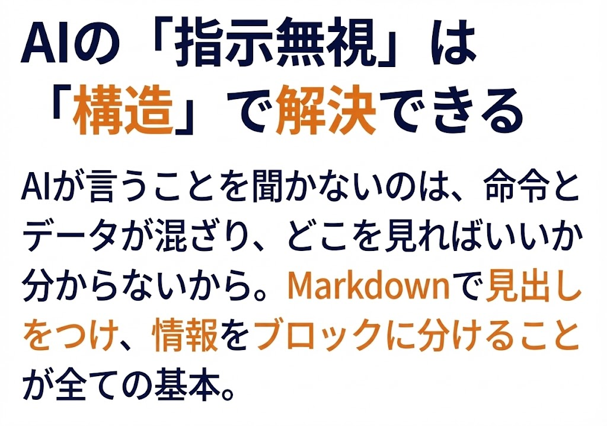

本ページは、Lv.1資料（プロンプトエンジニアリング基礎）のおまけ（PS / 後日談）です。
資料本編は「何を学ぶか」をまとめていますが、ここでは「どう作ったか」「作る中で詰まったこと」「得られた学び」を残します。
※文章量が多めなので、必要なところだけ拾ってもらえればOKです！
今回の資料は、NotebookLMのスライド作成機能を使って作りました。流れはこんな感じです。
NotebookLMに以下をソースとして入れました。
NotebookLMにはスライドを出力する機能（nanobanana利用）があるのですが、スライド生成のためのプロンプトを作る必要がありました。
ここはNotebookLMやGeminiと対話しながらプロンプトを作りました。
Geminiを使った理由は、NotebookLMのチャット欄に入力文字数制限（現在10,000文字まで使用できるそうなのですが、自分の環境では5,000文字程度しか入らなかった...）があったためです。
長い指示や複雑な構成案を練る段階では、Geminiで壁打ちをしてプロンプトを完成させ、それをNotebookLMに貼り付ける運用がスムーズでした。（画像はNotebookLMと壁打ちしている際のキャプチャです。）
作成したプロンプトをNotebookLMの「スライド資料作成」機能に入れて、
形式：詳細、長さ：デフォルト で生成しました。
※同じプロンプトで「プレゼンター向け」形式も試しましたが、いまいち違いが分かりませんでした。
プレゼンター形式の方が「説明しながら使う視覚寄り（文字少なめ）」なのかな？と感じましたが、大きな差は無いように感じました。
以下が今回使ったプロンプトです。
---
### 【第1回 確定版】 Instruction Following の最適化
**～AIに「指示」を通す構造化技術と、その自動生成（Meta-Prompting）～**
* **スライド枚数:** 17枚
* **ターゲット:** エンジニア・実務担当者（「AIの挙動が安定しない」と悩む層）
---
#### ■ Section 1: 課題とメカニズム（Why）
**スライド1：表紙**
* **タイトル:** プロンプトエンジニアリングの基礎：Instruction Followingの最適化
* **サブタイトル:** ～なぜAIは指示を無視するのか？ 構造化による制御と自動生成～
* **ゴール:** プロンプトエンジニアリングを通して「意図通りの回答」を引き出す。
**スライド2：【導入】こんな「あるある（指示無視）」ありませんか？**
* **現象:**
* 「200文字以内で」と書いたのに、平気で長文が返ってくる。
* 「指示：「詳細を**省かないで**ください。」回答：「長いため**要約しました**...」（←AIの"気を利かせる"機能が暴発）
* 「JSON形式で」と頼んだのに、全く違う形式（例：Markdownの表）で出力される。
* **問題提起:** これはAIの性格のせいではありません。**「プロンプトの構造」が悪いせいで、AIがどこを見ればいいか分かっていない**のです。
**スライド3：【原理】LLMは「確率」で次を予測している**
* **仕組み:**
* LLMは質問の意味を理解しているわけではなく、入力されたテキストに続く「最も確率が高い単語（トークン）」を予測しているだけです。
* **非決定論的性質:** 指示が曖昧だと、AIは学習データ（インターネット上の一般的な文章）に引っ張られ、あなたの独自の制約（JSONなど）よりも「一般的な会話の続き」を優先して出力してしまいます。
**スライド4：【原理】「Lost in the Middle」とAttentionの限界**
* **Attentionメカニズム:**
* LLMは入力された文章の「どこに注目すべきか」を計算しています（Self-Attention）。
* **Lost in the Middle:** しかし、プロンプトが長くなると、**「真ん中」に書かれた指示は埋もれやすく、無視される傾向**があります（Recency Biasにより、最初と最後が優先されるため）。
* **結論:** 文章力ではなく、**「視覚的な区切り（構造化）」**でAttentionを強制的に誘導する必要があります。
---
#### ■ Section 2: 構造化と制御技術（How）
**スライド5：【解決策①】 共通言語「Markdown」によるSemantic Partitioning**
* **テクニック:** `###`（見出し）を活用する。
* **真の目的:**
* 人間が読みやすくするためではありません。
* **「望んだ回答を一発で出させる（Instruction Following）」ため**です。
* **Why（技術的根拠）:**
* GPT-4やGemini等のモデルは、GitHub上のコードやドキュメントを大量に学習しています。そのため、Markdownの構文（`#` は見出し）を**「情報の意味的な区切り」**として強く認識するバイアスを持っています。
**スライド6：【解決策②】 データと命令を分ける「デリミタ」**
* **テクニック:** 区切り文字（Delimiters）の使用。
* **インジェクション対策:**
* 処理対象のテキスト内に「〜してください」という言葉が含まれていると、AIがそれを命令と誤認することがあります（プロンプトインジェクションに近い挙動）。
* **実践:**
* 対象データを `"""`（トリプルクォート）や `---`、XMLタグ `<text>` で囲む。
* 「ここからここまでがデータ領域」と物理的な壁を作ります。
**スライド7：【解決策③】 Recency Biasをハックする「サンドイッチ話法」**
* **テクニック:** 重要な制約は「最後」にも書く。
* **Why:** スライド4の「Recency Bias（最後を重視する）」を利用します。
* **実践:**
1. 冒頭で「JSON形式で出力して」と指示。
2. （入力データを挟む）
3. **最後に「念押し（Reminder）」として「余計な説明は不要。JSONのみ出力」と再掲する。**
**スライド8：【解決策④】 方向性を示す「Role Prompting（ペルソナ）」**
* **テクニック:** 「あなたは〜です」と役割を与える（Provide Direction）。
* **効果:**
* 「コードを書いて」→ 一般的なコードが出る。
* 「あなたは**セキュリティ専門家**です」→ 脆弱性を考慮したコードが出る。
* **ポイント:** AIが探索する「確率の空間」を、専門的な領域に絞り込む効果があります。
---
#### ■ Section 3: 学習理論の応用（Few-Shot）
**スライド9：【理論】Zero-Shot vs Few-Shot**
* **Zero-Shot（ゼロショット）:**
* 例を与えず、指示だけで解かせること。「この文章を要約して」など。
* これだとAIは「一般的な正解」しか出せず、独自のフォーマットを守れません。
* **Few-Shot（フューショット）:**
* 「入力と出力の例」を見せること。
* AIはプロンプト内の例を見て、**その場でパターンを学習（In-Context Learning）**します。
**スライド10：【技術⑤】 最強の指示「Few-Shot Prompting」**
* **概念:**
* AIに「やり方」を言葉で説明するのではなく、**「入力と正解のペア（事例）」**を見せて、タスクの**パターン**を学習させる技術。
* **実践例（感情分析タスク）：**
* 言葉で「ネガティブなら-1、ポジティブなら+1、中立なら0」と説明するのは大変ですが、例なら一瞬です。
* **Prompt Example:**
text
Text: 商品が届かない。
Sentiment: -1
Text: 最高に使いやすい！
Sentiment: 1
Text: 昨日は雨だった。
Sentiment: 0
Text: {{target_text}}
Sentiment:
* **効果:** これを見せるだけで、AIは「感情分析タスク」であること、「出力は数値のみ」であることを**文脈（Context）から悟ります**。
**スライド11：【技術⑥】 思考の連鎖「Chain of Thought (CoT)」**
* **テクニック:**
* プロンプトに**「ステップ・バイ・ステップで考えてください」**と一言加える。
* **なぜ必要なのか（具体例）：**
* **タスク:** 「リンゴが3個あります。2個買い足して、1個食べました。いま何個？」
* **Zero-Shot（悪い例）:** 直感的に「5個」や「6個」と計算ミスをすることがある。
* **CoT（良い例）:**
* 「ステップ1: 最初に3個ありました。」
* 「ステップ2: 2個買い足したので 3 + 2 = 5個になりました。」
* 「ステップ3: 1個食べたので 5 - 1 = 4個です。」
* **「答え：4個」**
* **効果:** 中間的な推論プロセスを出力させることで、論理の飛躍を防ぎ、正答率が劇的に向上します。
---
#### ■ Section 4: 自動化とテンプレート（Automation）
**スライド12：【課題】 正直、これを毎回書くのは「面倒」ですよね？**
* **本音:**
* 「構造化が大事なのはわかった。でも、毎回 `### Constraints` とか `### Few-Shot` とか手打ちするのは面倒だし、難しい…」
* 「プロンプトエンジニアリングなんて勉強したくない」
* **解決策:**
* **「そのプロンプト自体を、AIに書かせればいい（Meta-Prompting）」**のです。
**スライド13：【解決策】 メタプロンプト（AIに指示書を書かせる）**
* **手法:**
* AIは「AIへの指示書」を書くのが得意です。
* 私たちは「やりたいこと」を雑に投げるだけで、AIが勝手に「黄金テンプレート」に変換してくれる仕組み（プロンプト）を用意しました。
* これを使えば、**誰でも・一瞬で・精度の高い構造化プロンプト**が作れます。
**スライド14：【お試し】 プロンプト生成用プロンプト**
* **使い方：以下のプロンプトをコピーして、ChatGPTやGeminiに張り付けて実際に使用してみてください**
markdown
# Role
あなたは世界最高峰の「プロンプトエンジニア」です。
ユーザーの曖昧な【要望】を解析し、LLMの能力を最大限に引き出す「構造化されたプロンプト」を作成してください。
# User Request
{{ここに「要約してほしい」「JSONに変換して」など雑に入力}}
# Instructions
1. **目的の理解**: ユーザーの要望から、タスクの目的（要約、抽出、変換、創作など）を特定してください。
2. **構成要素の生成**: 以下の要素を含むプロンプトを作成してください。
- `# Role`: タスクに最適な専門家のペルソナ。
- `# Constraints`: 文字数、形式、禁止事項（やってはいけないこと）などの制約。
- `# Few-Shot Examples`: 入力と理想的な出力のペア（最低1〜2つ）。**精度の肝です。**
- `# Input Format`: 入力データを埋め込むための変数を `{{input_text}}` の形式で定義し、デリミタ `"""` で囲む構造にする。
- `# Output Format`: JSON形式やmd形式などアウトプットの出力揺れを抑えます。
- `# Reminder`: 末尾に「上記の制約を厳守し、出力を返してください」という念押し（サンドイッチ話法）を入れる。
# Output Rules
- 出力はMarkdown形式のコードブロックのみとすること。
- 解説や前置きは不要。作成したプロンプトだけを出力すること。
# Step-by-Step Execution
ユーザーの要望に基づき、最高のプロンプトを出力してください。
**スライド15：【プロンプト生成用プロンプトを使ってみた】 （想定：会議のメモから議事録を作成）**
**
* **使い方：前ページのプロンプトをコピーして、プロンプトを簡単に書いてみました。# Role
あなたは論理的で正確な記録を作成する「プロフェッショナルな秘書」です。
# Constraints
* 曖昧な表現を避け、具体的な決定事項を明確に記述すること。
* 文体は「だ・である」調で統一すること。
* 挨拶や主観的な感想は省き、事実のみを記載すること。
# Output Structure
以下のフォーマットに従って出力してください。
## 1. 会議概要
* 日時・参加者（テキストから読み取れる場合）
## 2. 決定事項（最重要）
* 合意された内容を箇条書きで記載
## 3. 議論の要点
* 決定に至るまでの経緯や重要な意見
## 4. Next Action
* 【誰が】【いつまでに】【何をするか】を明確に記載
# Input Data
"""
{{input_text}}
"""
# Reminder
「決定事項」の漏れは許されません。上記のフォーマットを厳守して出力してください。
こんな簡単なプロンプトでもGeminiの議事メモから成形した議事録を作りだす事ができますね。
**スライド16：まとめ & Next Step**
* **今日のまとめ:**
* AIは構造化（Markdown）で制御せよ。
* 言葉でダメなら例（Few-Shot）を見せろ。
* **面倒な構造化は、AI（メタプロンプト）にやらせろ。**
* **ただし、1発で100点の回答は求めない。生成AIは対話を通して精度を上げていくプロセスが非常に重要でありどんなに完璧なプロンプトを作ったとしても、一発で100点の回答が来るとは限りません。**
**スライド17：まとめ & Next Step**
* **次回予告:**
* 「これでプロンプトエンジニアリングの基礎を抑える事ができました。」
* 「しかし、対話を続けると…AIはバケツ（メモリ）が溢れて精度が低くなります。」
* 次回、**【第2回】コンテキストエンジニアリング：記憶の寿命と管理術**。
---
正直、便利な反面「編集」という意味では課題も多かったです。
現時点では、出力形式に以下の制限があります。
ちなみに、出力結果ではこういった文字がつぶれてしまったりするケースが実際にあります。
（これが編集できないというのが課題でありこれをどう直すか？というのが次の「対処法」になります）
編集できないPDFをどう修正するか。試行錯誤の結果、以下の2つの方法にたどり着きました。
オーソドックスな力技な方法です。PDFを画像化（Adobe等の方法を用いてpdf→png、jpegに変更）してPowerPointに貼り、修正したい箇所の上に「背景と同じ色の図形」や「テキストボックス」を重ねて隠してしまいます。
これは思いつきで試した方法ですが、「nanobananaで作ったなら、nanobananaで修正できるのでは？」と考え、やってみたら上手くいきました！
文字が潰れている箇所や、化けているスライドのスクリーンショットを撮ります。
その画像をAI（nanobanana等）に渡し、以下のようなプロンプトを流します。
「この画像、文字が化けている/潰れているのできれいにしてください。（フォント、構成、図の配置などは全く変えなくて大丈夫です）」
きれいに再生成された画像をコピーして、元のスライド（PowerPoint等）に貼り付ければ完了です。

▼ 最終的な仕上がり例
作成させた文字画像を上からかぶせることで「情報」という文字が潰れていたのが、きれいに修正されているのが分かると思います。
直接編集ができないなど課題はあるものの、ここまで精度が高く分かりやすい資料を“たたき台”として一気に作れるのはかなり強いと感じました。
今後は上記の「上から貼り付け」と「AIによる再生成」の2つを使い分けながら活用していくつもりです。（まだまだスマートなやり方があると思うので模索しながら使用していきたいです！）
ただどの修正方法も時間がかかってしまうので、NotebookLMに「Googleスライド形式での出力機能」が搭載されることを心から祈っています！笑